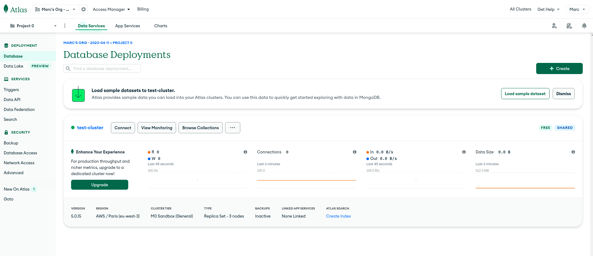

00 - MongoDB
Introduction
MongoDB works with BSON (Binary JSON).
Instead of working with tables, we work with Collections. Each Collection has Documents. Each document is stored with JSON structure.
How to initialize a MongoDB database
On cloud:
Go to MongoDB webpage > Done
Create an account > Done
Create a cluster > Done
Security Quickstart: 2 options
- Create a user with read-write access to the databases > DONE
- Authenticate via a certificate > TODO
Network access: defined via IPs
- Add each of the public IPs from where youll connect to the MongoDB cloud cluster
Database deployments:

MongoDB - Dashboard Database access: provides the URL syntax to connect to the database
MongoDB - Database connection details - Replace the
usernameandpasswordwith the user credentials created in the previous steps
- Replace the
Extra: LDAP authentication > TODO
Create a Collection
- Either load a sample dataset or add your own data. When loading the provided sample test, you can browse 9 databases with their own collections:
MongoDB - Cluster dashboard
On premises:
- Docker deployment > TODO
How to connect projects to a MongoDB database
Spring Boot project:
Spring connection:
JPA annotations to access Collections and Documents
@Document: defined with acollectionvalue that represents the MongoDB collection
MongoRepository
MongoDB Free online course
Course: Using MongoDB with Java
- Estimated duration: 3 hoursUnit 1: Connecting to MongoDB in Java
Lesson 1: Using MongoDB Java Client Libraries
What do we need to connect to MongoDB?
- Set of libraries > Drivers
- MongoDB official drivers for synchronous or asynchronous application code
- Benefits of MongoDB official drivers:
- Simplify connecting to and interacting with their database from your application
- Establish secure connections to a MongoDB cluster
- Execute database operations on behalf of client applications
- Specify connection options (security, writing ability, isolation, etc..)
- Adhere to language best practices
- Use the full functionality of MongoDB deployment
- Make upgrading easier
- Official docs:
- Usage examples
- Fundamental concepts
- Reference documentation
- API documentation
Recap:
- MongoDB Java applications must use the official drivers to ensure optimal performance, compatibility and an easy update path
- Drivers simplify connecting to and interacting with a MongoDB deployment
- Official driver documentation is available on the MongoDB website
Quiz:
Q: What is the principal responsibility of a MongoDB driver?
A: To establish secure connections to a MongoDB cluster and execute database operations on behalf of client applications.
Q: The official MongoDB drivers adhere to each programming languages best practices.
A: True